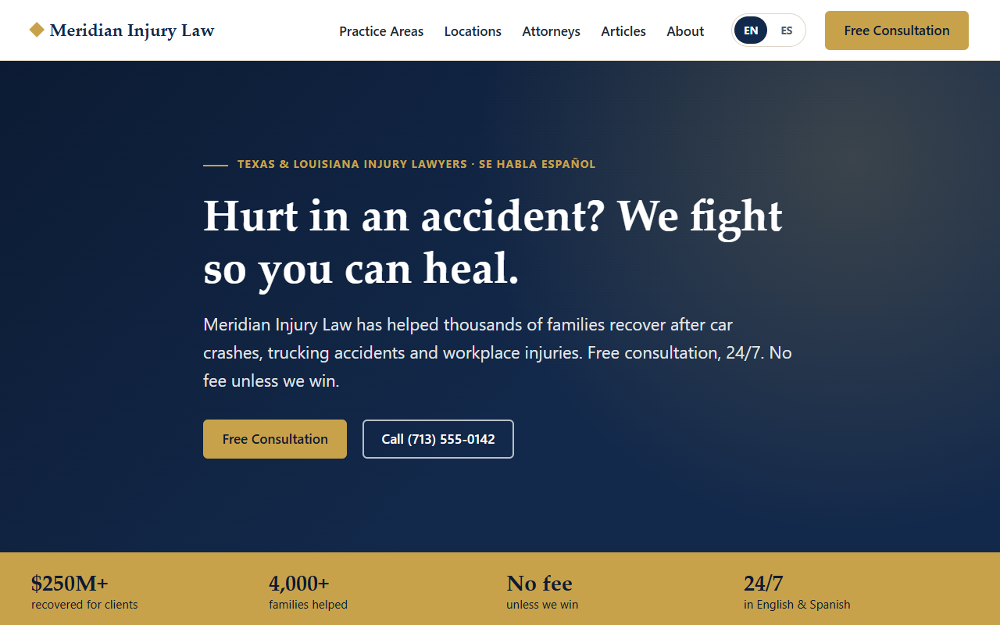
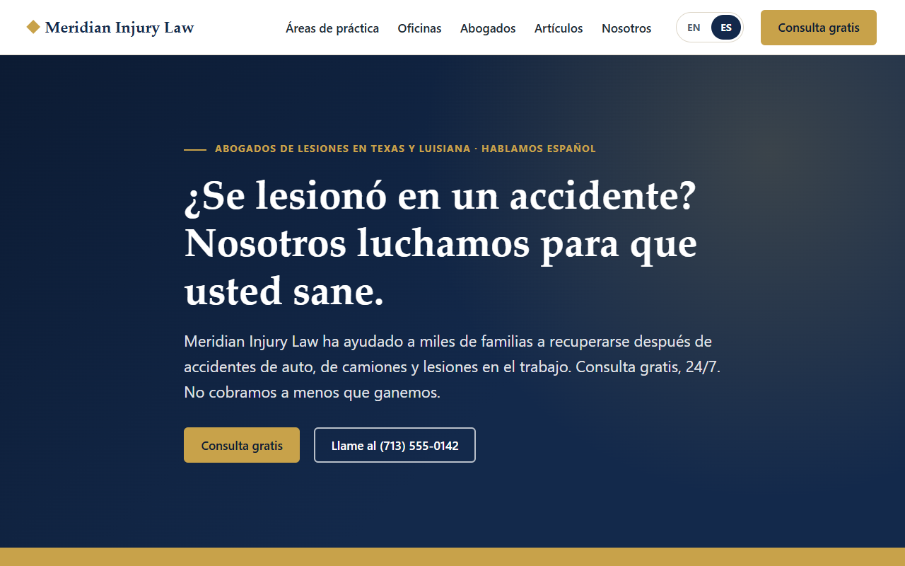
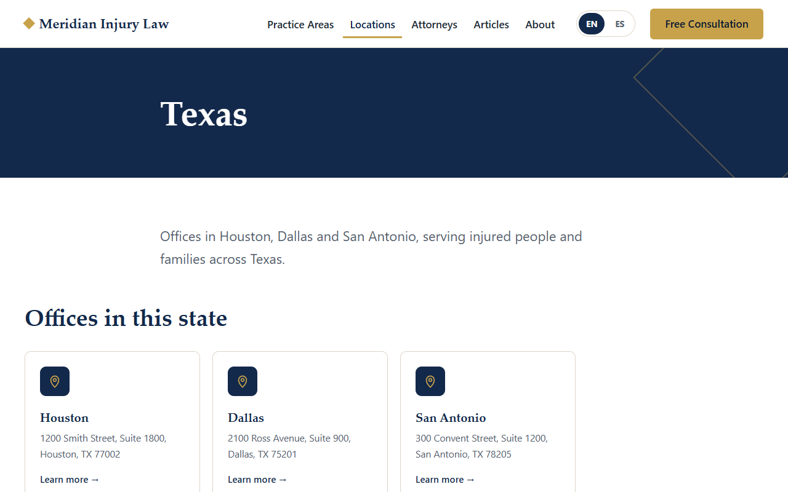
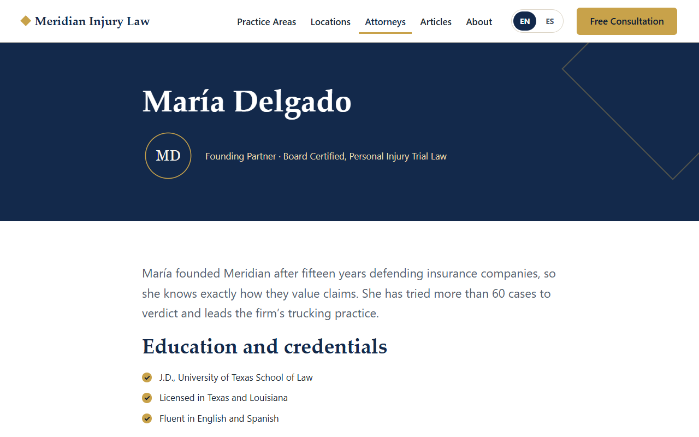
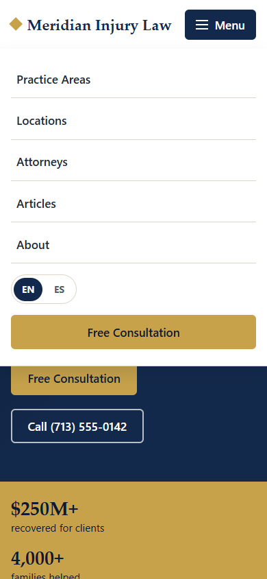
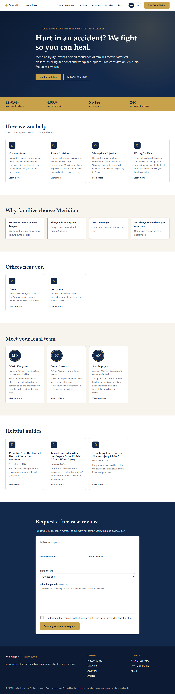

Screenshots






What's included
Reusable templates
Block theme templates for the homepage, pages, practice areas, attorneys, locations, articles, search and 404, with shared header and footer parts.
Global styles
Colours, typography, spacing and buttons defined once in
theme.jsonand editable in the Site Editor.State and city pages
Hierarchical locations, so each state lists its cities automatically:
/locations/texas/houston/.English & Spanish
Polylang for
/es/URLs, translation links and hreflang. Menus, footer and form text switch language automatically.Accessible navigation
Skip link, labelled nav, a keyboard-friendly mobile menu that closes with Escape, and clear focus outlines.
Accessible forms
Labelled fields, autocomplete, an error summary that receives focus and inline errors linked to their fields.
No-code editing
New practice areas, attorneys or cities appear automatically in menus, card grids and the contact form.
Fast & light
Inline SVG icons, system fonts and under 1 KB of JavaScript. Native WordPress lazy loading and srcset for photos.
How it's built
| Part | Details |
|---|---|
| Theme | WordPress block theme, theme.json v3, HTML templates and template parts |
| Plugin | Custom post types, bilingual helpers, consultation form, SEO tags and a demo content installer. Kept separate from the theme so content survives a redesign. |
| Languages | Polylang (English default with no prefix, Spanish under /es/) |
| Forms | Server-side validation, nonce and honeypot spam protection, submissions saved as private "Inquiries" and emailed to the admin |
| SEO | Meta descriptions, LegalService structured data, hreflang alternates |
| Workflow | AI-assisted development (Claude Code), with every change reviewed and tested by hand |